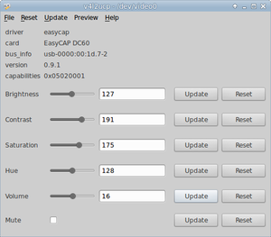

Experteninformation
Dieser Artikel wurde für die folgenden Ubuntu-Versionen getestet:
Dieser Artikel ist mit keiner aktuell unterstützten Ubuntu-Version getestet! Bitte diesen Artikel testen und das getestet-Tag entsprechend anpassen.
Artikel für fortgeschrittene Anwender
Dieser Artikel erfordert mehr Erfahrung im Umgang mit Linux und ist daher nur für fortgeschrittene Benutzer gedacht.
Zum Verständnis dieses Artikels sind folgende Seiten hilfreich:
Dieser Artikel enthält Experteninformation für die Nutzung des EasyCAP DC60. Alle Grundinformationen finden sich im Artikel EasyCAP DC60 USB Audio und Videograbber.

Überprüfung mit v4l2ucp¶
Das "Video 4 Linux 2 Control Panel" ist ein grafisches Hilfsprogramm, das die Daten des geladenen v4l2 Treibers anzeigt und Einstellungen für den Treiber der TV-Karte ermöglicht. Im Menüpunkt Preview kann die TV-Karte (nur der Video-Eingang) mit mplayer getestet werden. Das Bild zeigt v4l2ucp bei geladenem Easycaptreiber.
v4l2ucp (Video 4 Linux 2 Control Panel)
 mit apturl
mit apturl
Paketliste zum Kopieren:
sudo apt-get install v4l2ucp
sudo aptitude install v4l2ucp
Treiberversionen¶
Der Easycaptreiber wurde ab 2009 auf der Grundlage des Webcamtreibers stk11xx  entwickelt und auf der Projekthomepage zur Verfügung gestellt. Um Überschneidungen mit dem im Kernel enthaltenen Staging-Treiber zu vermeiden, hat der Entwickler des Treibers entschieden, die Projekthomepage zum 1.11.2011 zu deaktivieren.
entwickelt und auf der Projekthomepage zur Verfügung gestellt. Um Überschneidungen mit dem im Kernel enthaltenen Staging-Treiber zu vermeiden, hat der Entwickler des Treibers entschieden, die Projekthomepage zum 1.11.2011 zu deaktivieren.
Staging-Treiber im Kernel 2.6.38 bis 3.6.¶
Seit der Übernahme des Easycaptreibers in den Kernel wird nur mehr der sogenanne Staging-Zweig gemeinsam mit dem Kernel weiterentwickelt und ist derzeit in der Version 0.9.01 im Kernel 3.x enthalten.
"Staging" bedeutet einerseits, dass die Entwickler des Kernels keine 100%ige Funktionsgarantie für den Treiber geben, andererseits steht damit der Easycaptreiber auf der Liste der "dringend" zu verbessernden Kernelmodule.
Stk1160 Treiber im Kernel seit 3.7¶
Inzwischen wurde der Easycaptreiber überarbeitet, heißt jetzt stk1160, ersetzt den Easycaptreiber ab Kernel 3.7 und steht in Ubuntu 13.04 zur Verfügung.
Quellcodepaket des Easycapdrivers Version 0.9¶
Der ursprüngliche Zweig des Treibers lag zuletzt in der Version 0.9 vor.
Zu Testzwecken bei Problemen mit dem Staging-Treiber wird der Quellcode des Easycaptreibers (Version 0.9) auf sites.google.com/site/viewandrecordwithlinux  zur Verfügung gestellt.
zur Verfügung gestellt.
Die Installation wird weiter unten beschrieben.
Testskripte¶
Im Quellcodepaket sind zusätzlich zum Programmcode nützliche Skripte enthalten, die auch mit dem Staging-Treiber funktionieren. Wer die Testskripte nutzen möchte, muss also nicht den Treiber neu installieren.
Grundlegende Tests der Funktionen des EasyCAP DC60 können auch mit dem EasyCAP Skript durchgeführt werden.
Liste der Skripte nach Funktionen¶
Installationshilfen¶
install.sh - Das Installationsskript
install_simple.sh - Das Installationsskript ohne zusätzliche Systemtests
uninstall.sh - Deinstalliert den Treiber
permit.sh - Ändert die Zugriffsrechte für /dev/video0 und /dev/EasyALSA0 so, dass jeder Nutzer darauf zugreifen kann. Die Ausführung ist nur notwendig, wenn es im Istallationsprozess nicht funktioniert.
Einstellungen¶
frequency.sh - Stellt fest, ob es sich um einen EasyCAP DC60 mit 48000 Hz oder 8000 Hz Audio handelt
louder.sh und softer.sh - Stellen die Lautstärkeparameter für dem Treiber um
Programmspezifische Testskripte¶
testPAL.sh und weitere testXXX.sh - Mit den verschiedenen Testskripten können jeweils unterschiedliche Einstellungen für MPlayer durchprobiert werden. Jedes Skript ist auf ein EasyCAP Modell (001 oder 002) und einen TV-Standard zugeschnitten.
Für tvtime, VLC, xawtv und gstreamer sind weitere Testskripte vorhanden.
Im Unterordner OpenSoundSystem befinden sich Testskripte mit OSS Unterstützung.
Im Unterordner tools befinden sich weitere Skripte, die jeweils zu Beginn des Skriptcodes (Skript in einem Editor öffnen) erklärt werden.
Manuelle Treiberinstallation¶
Um den Easycap DC60 mit früheren Ubuntu-Versionen (Kernel älter als 2.6.38) zu betreiben, um die Audioeingabe des Easycap DC60 in Ubuntu 11.04 nutzen zu können oder für Testzwecke kann man den Treiber in der Version 0.9 selbst installieren.
Für die Installation wird das heruntergeladene Quellcodepaket in den Heimordner entpackt. Es lohnt sich ein Blick in die darin enthaltene README Datei.
Bei ausgestecktem Easycap DC60 wird mit der Eingabe von folgenden Befehlen in der Kommandozeile:
cd easycap_dc60.0.9/ sudo ./install.sh
das Installationsskript aufgerufen und das Kernelmodul erstellt und installiert.
Sollte eine Fehlermeldung auftreten, kann man versuchen, den Treiber mit dem im Quellpaket enthaltenen Skript ./install_simple.sh erneut zu installieren. Oder man konsultiert noch einmal die README Datei.
Installation ab Kernel 3.0¶
Wenn man versucht, den Easycaptreiber ab Kernel 3.0 (ab Ubuntu 11.10) manuell zu installieren, erhält man eine Fehlermeldung.
Achtung!
Obwohl diese Methode getestet wurde, wird hier keine Funktionsgarantie, insbesondere für spätere Kernelversionen, übernommen. Erfahrung im Umgang mit der Konsole und Editoren wird vorausgesetzt.
Erst wenn in der Datei easycap_dc60.0.9/src/easycap_ioctl.c die Zeile 28 (hier Zeile 1) auskommentiert wird:
1 | /* #include <linux/smp_lock.h> */
|
und die Datei anschließend gespeichert wird, kann man den Easycaptreiber mit dem Installationsskript problemlos installieren.
Wiederherstellung des im Kernel enthaltenen Treibers¶
Wenn der im Kernel enthaltene Easycaptreiber wiederhergestellt werden soll, dann genügt es, das im Quellpaket enthaltene Skript uninstall.sh auszuführen.
Umgehung der Treiberabschaltung bei kopiergeschützten VHS Videos¶
Bei der Wiedergabe von kopiergeschützten VHS Videos mit dem EasyCAP DC60 kann es vorkommen, dass der Treiber den Videostream nicht mehr "akzeptiert".
dmesg
meldet
easycap driver shutting down on condition blue
Diese Beschränkung im Treiber kann durch eine kleine Änderung am Quellcode aufgehoben werden (Installationsanleitung siehe oben):
Achtung!
Obwohl diese Methode getestet wurde, wird hier keine Funktionsgarantie übernommen. Erfahrung im Umgang mit der Konsole und Editoren wird vorausgesetzt.
In der Datei easycap_dc60.0.9/src/easycap_ioctl.c muss Zeile 2266 bis 2270 (hier Zeile 8 bis 12) auskommentiert werden.
Codeabschnitt vorher:
1 2 3 4 5 6 7 8 9 10 11 12 13 14 15 16 17 18 | if (!(peasycap->isequence % 10)) { for (i = 0; i < 179; i++) peasycap->merit[i] = peasycap->merit[i+1]; peasycap->merit[179] = merit_saa(peasycap->pusb_device); j = 0; for (i = 0; i < 180; i++) j += peasycap->merit[i]; if (90 < j) { SAM("easycap driver shutting down " \ "on condition blue\n"); peasycap->video_eof = 1; peasycap->audio_eof = 1; } } v4l2_buffer.index = peasycap->frame_read; v4l2_buffer.type = V4L2_BUF_TYPE_VIDEO_CAPTURE; v4l2_buffer.bytesused = peasycap->frame_buffer_used; v4l2_buffer.flags = V4L2_BUF_FLAG_MAPPED | V4L2_BUF_FLAG_DONE; |
Codeabschnitt nachher:
1 2 3 4 5 6 7 8 9 10 11 12 13 14 15 16 17 18 19 | if (!(peasycap->isequence % 10)) { for (i = 0; i < 179; i++) peasycap->merit[i] = peasycap->merit[i+1]; peasycap->merit[179] = merit_saa(peasycap->pusb_device); j = 0; /* for (i = 0; i < 180; i++) j += peasycap->merit[i]; if (90 < j) { SAM("easycap driver shutting down " \ "on condition blue\n"); peasycap->video_eof = 1; peasycap->audio_eof = 1; } */ } v4l2_buffer.index = peasycap->frame_read; v4l2_buffer.type = V4L2_BUF_TYPE_VIDEO_CAPTURE; v4l2_buffer.bytesused = peasycap->frame_buffer_used; v4l2_buffer.flags = V4L2_BUF_FLAG_MAPPED | V4L2_BUF_FLAG_DONE; |
Die Datei wird anschließend gespeichert. Damit es funktioniert, muss der Easycaptreiber mit dem Installationsskript neu installiert werden.
Falls etwas schief geht, kann man durch erneutes Herunterladen des Quellcodes und erneute Installation den Treiber wiederherstellen.
- Erstellt mit Inyoka
-
 2004 – 2017 ubuntuusers.de • Einige Rechte vorbehalten
2004 – 2017 ubuntuusers.de • Einige Rechte vorbehalten
Lizenz • Kontakt • Datenschutz • Impressum • Serverstatus -
Serverhousing gespendet von